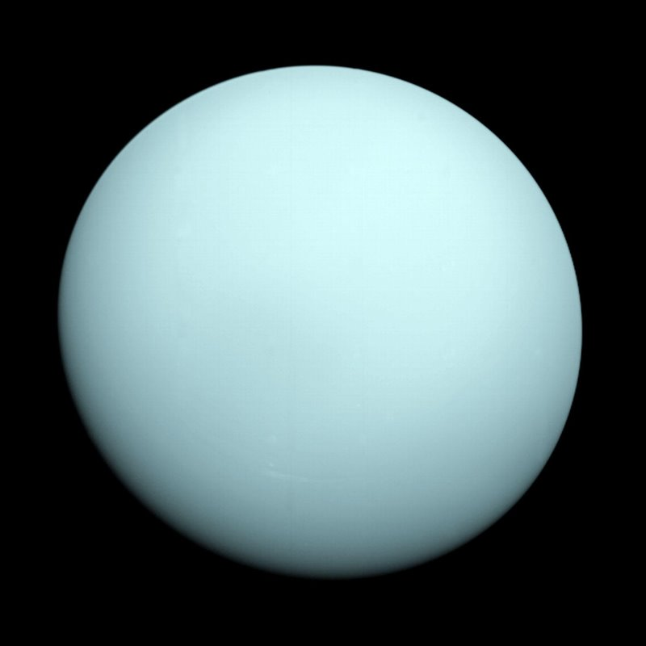

URANO

Un gigante helado que se distingue por rotar “acostado” sobre su eje, lo que lo hace único. Su atmósfera contiene metano, lo que le da un color azul verdoso.
Posee anillos tenues y al menos 27 lunas conocidas. Su clima es muy frío y ventoso.